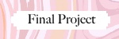

|
 |
 |
 |
For my final project, my partner and I decided to create our own rendition of Flappy Bird. To play, simply
hit the start button on the main screen of the app! Then use the space bar on your keyboard to help the bird fly
and avoid the tubes. Once the space bar is released, the bird will start to fall.
The tubes are serving as obstacles and once they are hit, the game is OVER!!
The Flappy Bird game evaluates your score by counting how long you can keep the bird flying
Made using: Khan Academy Computer Science